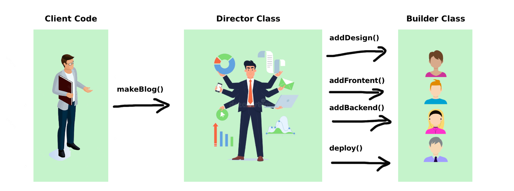

<!DOCTYPE html>
<html lang="en">
  <head>
    <meta charset="utf-8" />
    <meta name="viewport" content="width=device-width, initial-scale=1.0, maximum-scale=1.0, user-scalable=no" />

    <title></title>
    <link rel="stylesheet" href="dist/reveal.css" />
    <link rel="stylesheet" href="dist/theme/serif.css" id="theme" />
    <link rel="stylesheet" href="plugin/highlight/monokai.css" />
	<link rel="stylesheet" href="css/layout.css" />
	<link rel="stylesheet" href="plugin/customcontrols/style.css">
	<link rel="stylesheet" href="plugin/chalkboard/style.css">


    <script defer src="dist/fontawesome/all.min.js"></script>

	<script type="text/javascript">
		var forgetPop = true;
		function onPopState(event) {
			if(forgetPop){
				forgetPop = false;
			} else {
				parent.postMessage(event.target.location.href, "app://obsidian.md");
			}
        }
		window.onpopstate = onPopState;
		window.onmessage = event => {
			if(event.data == "reload"){
				window.document.location.reload();
			}
			forgetPop = true;
		}

		function fitElements(){
			const itemsToFit = document.getElementsByClassName('fitText');
			for (const item in itemsToFit) {
				if (Object.hasOwnProperty.call(itemsToFit, item)) {
					var element = itemsToFit[item];
					fitElement(element,1, 1000);
					element.classList.remove('fitText');
				}
			}
		}

		function fitElement(element, start, end){

			let size = (end + start) / 2;
			element.style.fontSize = `${size}px`;

			if(Math.abs(start - end) < 1){
				while(element.scrollHeight > element.offsetHeight){
					size--;
					element.style.fontSize = `${size}px`;
				}
				return;
			}

			if(element.scrollHeight > element.offsetHeight){
				fitElement(element, start, size);
			} else {
				fitElement(element, size, end);
			}		
		}


		document.onreadystatechange = () => {
			fitElements();
			if (document.readyState === 'complete') {
				if (window.location.href.indexOf("?export") != -1){
					parent.postMessage(event.target.location.href, "app://obsidian.md");
				}
				if (window.location.href.indexOf("print-pdf") != -1){
					let stateCheck = setInterval(() => {
						clearInterval(stateCheck);
						window.print();
					}, 250);
				}
			}
	};


        </script>
  </head>
  <body>
    <div class="reveal">
      <div class="slides"><section  data-markdown><script type="text/template"><!-- .slide: class="drop" -->
<div class="" style="position: absolute; left: 0px; top: 0px; height: 700px; width: 960px; min-height: 700px; display: flex; flex-direction: column; align-items: center; justify-content: center" absolute="true">

# JavaScript GOF  patterns
</div></script></section><section  data-markdown><script type="text/template"><!-- .slide: class="drop" -->
<div class="" style="position: absolute; left: 0px; top: 0px; height: 700px; width: 960px; min-height: 700px; display: flex; flex-direction: column; align-items: center; justify-content: center" absolute="true">

## JavaScript GOF  patterns 


</div></script></section><section  data-markdown><script type="text/template"><!-- .slide: class="drop" -->
<div class="" style="position: absolute; left: 0px; top: 0px; height: 700px; width: 960px; min-height: 700px; display: flex; flex-direction: column; align-items: center; justify-content: center" absolute="true">

## JavaScript GOF  patterns 


</div></script></section><section ><section data-markdown><script type="text/template"><!-- .slide: class="drop" -->
<div class="" style="position: absolute; left: 0px; top: 0px; height: 700px; width: 960px; min-height: 700px; display: flex; flex-direction: column; align-items: center; justify-content: center" absolute="true">

##  Singleton


Паттерн который гарантирует, что у класса есть только один экземпляр
</div></script></section><section data-markdown><script type="text/template"><!-- .slide: class="drop" -->
<div class="" style="position: absolute; left: 0px; top: 0px; height: 700px; width: 960px; min-height: 700px; display: flex; flex-direction: column; align-items: center; justify-content: center" absolute="true">

### Singleton diagram


<div class="mermaid">
flowchart LR
  A[Singleton] -- getInstance --> A

</div>


```js
new Singleton() === new Singleton(); // true
```
</div></script></section><section data-markdown><script type="text/template"><!-- .slide: class="drop" -->
<div class="" style="position: absolute; left: 0px; top: 0px; height: 700px; width: 960px; min-height: 700px; display: flex; flex-direction: column; align-items: center; justify-content: center" absolute="true">

### Singleton  code example

```js
class Singleton {
  static #instance;

  constructor() {
    if (Singleton.#instance) {
      return Singleton.#instance;
    }

    Singleton.#instance = this;
  }
}

new Singleton() === new Singleton(); // true
```
</div></script></section></section><section ><section data-markdown><script type="text/template"><!-- .slide: class="drop" -->
<div class="" style="position: absolute; left: 0px; top: 0px; height: 700px; width: 960px; min-height: 700px; display: flex; flex-direction: column; align-items: center; justify-content: center" absolute="true">

## Factory Method


Определяет общий интерфейс для создания объектов в суперклассе, позволяя подклассам изменять тип создаваемых объектов.
</div></script></section><section data-markdown><script type="text/template"><!-- .slide: class="drop" -->
<div class="" style="position: absolute; left: 0px; top: 0px; height: 700px; width: 960px; min-height: 700px; display: flex; flex-direction: column; align-items: center; justify-content: center" absolute="true">

### Factory Method diagram


<div class="mermaid">
flowchart LR
  A[Component] -- factoryMethod --> B[Factory] -- new --> C[Object]

</div>
</div></script></section><section data-markdown><script type="text/template"><!-- .slide: class="drop" -->
<div class="" style="position: absolute; left: 0px; top: 0px; height: 700px; width: 960px; min-height: 700px; display: flex; flex-direction: column; align-items: center; justify-content: center" absolute="true">

### Factory Method code example

Classical example:

```js
class Creator {
  factoryMethod() {/* abastruct */}

  someOperation() {
    const product = this.factoryMethod();

    return `Creator: Run ${product.operation()}`;
  }
}

class ConcreteProduct1 {
  operation() {
    return '{Result of the ConcreteProduct1}';
  }
}

class ConcreteProduct2 {
  operation() {
    return '{Result of the ConcreteProduct2}';
  }
}

class ConcreteCreator1 extends Creator {
  factoryMethod() {
    return new ConcreteProduct1();
  }
}

class ConcreteCreator2 extends Creator {
  factoryMethod() {
    return new ConcreteProduct2();
  }
}
```
</div></script></section><section data-markdown><script type="text/template"><!-- .slide: class="drop" -->
<div class="" style="position: absolute; left: 0px; top: 0px; height: 700px; width: 960px; min-height: 700px; display: flex; flex-direction: column; align-items: center; justify-content: center" absolute="true">

### Factory Method code example

Project example:

```js
class SuccessNotification {}
class ErrorNotification {}
class InfoNotification {}

class Component {
  factoryMethod (type = '') {
    const notificationTypes = {
      succes: SuccessNotification,
      error: ErrorNotification,
      info: InfoNotification
    };

    const notification = new notificationTypes[type];

    return notification;
  }
}
```
</div></script></section></section><section ><section data-markdown><script type="text/template"><!-- .slide: class="drop" -->
<div class="" style="position: absolute; left: 0px; top: 0px; height: 700px; width: 960px; min-height: 700px; display: flex; flex-direction: column; align-items: center; justify-content: center" absolute="true">

## Abstract Factory


Позволяет создавать семейства связанных объектов, не привязываясь к конкретным классам создаваемых объектов.
</div></script></section><section data-markdown><script type="text/template"><!-- .slide: class="drop" -->
<div class="" style="position: absolute; left: 0px; top: 0px; height: 700px; width: 960px; min-height: 700px; display: flex; flex-direction: column; align-items: center; justify-content: center" absolute="true">

### Abstract Factory diagram


<div class="mermaid">
flowchart TB
  A[Abstract Factory] -- create --> B[Concrete Factory]
  B -- new --> C[Product 1]
  B -- new --> D[Product 2]
  B -- new --> E[Product 3]

</div>
</div></script></section><section data-markdown><script type="text/template"><!-- .slide: class="drop" -->
<div class="" style="position: absolute; left: 0px; top: 0px; height: 700px; width: 960px; min-height: 700px; display: flex; flex-direction: column; align-items: center; justify-content: center" absolute="true">

### Abstract Factory code example

```js[|7-11|13]
class SuccessNotification {}
class ErrorNotification {}
class InfoNotification {}

class NotificationFactory {
  static create (type = '') {
    const notificationTypes = {
      succes: SuccessNotification,
      error: ErrorNotification,
      info: InfoNotification
    };

    return notificationTypes[type];
  }
}

```
</div></script></section></section><section ><section data-markdown><script type="text/template"><!-- .slide: class="drop" -->
<div class="" style="position: absolute; left: 0px; top: 0px; height: 700px; width: 960px; min-height: 700px; display: flex; flex-direction: column; align-items: center; justify-content: center" absolute="true">

## Adapter


Позволяет объектам с несовместимыми интерфейсами работать вместе
</div></script></section><section data-markdown><script type="text/template"><!-- .slide: class="drop" -->
<div class="" style="position: absolute; left: 0px; top: 0px; height: 700px; width: 960px; min-height: 700px; display: flex; flex-direction: column; align-items: center; justify-content: center" absolute="true">

### Adapter diagram


<div class="mermaid">
flowchart LR
  A[Client] -- "get(a)" --> B[Adapter]
  B -- "getLibMethod(a)" --> C[Library]

</div>
</div></script></section><section data-markdown><script type="text/template"><!-- .slide: class="drop" -->
<div class="" style="position: absolute; left: 0px; top: 0px; height: 700px; width: 960px; min-height: 700px; display: flex; flex-direction: column; align-items: center; justify-content: center" absolute="true">

### Adapter code example

```js
// adapterA.js
import libA from './libA.js';

export const adapterA = {
  read () {
    return libA.readData();
  },
  write () {
    return libA.writeData();
  }
}

// adapterB.js
import libB from './libB.js';

export const adapterB = {
  read () {
    return libB.getData();
  },
  write () {
    return libB.sendData();
  }
}

// component.js
import adapterA from './adapterA.js';

class Component {
  constructor(props) {
    this.data = adapterA.read();
  }
  send () {
    adapterA.write();
  }
}
```
</div></script></section></section><section ><section data-markdown><script type="text/template"><!-- .slide: class="drop" -->
<div class="" style="position: absolute; left: 0px; top: 0px; height: 700px; width: 960px; min-height: 700px; display: flex; flex-direction: column; align-items: center; justify-content: center" absolute="true">

## Facade


</div></script></section><section data-markdown><script type="text/template"><!-- .slide: class="drop" -->
<div class="" style="position: absolute; left: 0px; top: 0px; height: 700px; width: 960px; min-height: 700px; display: flex; flex-direction: column; align-items: center; justify-content: center" absolute="true">

### Facade diagram


<div class="mermaid">
flowchart TB
  subgraph D[Facade method]
    A["method-1()"]
    B["method-2()"]
    C["method-n()"]
  end

</div>
</div></script></section><section data-markdown><script type="text/template"><!-- .slide: class="drop" -->
<div class="" style="position: absolute; left: 0px; top: 0px; height: 700px; width: 960px; min-height: 700px; display: flex; flex-direction: column; align-items: center; justify-content: center" absolute="true">

### Facade code example

```js{1, 2-3}
class Component {
  async update () {
    const data = await this.loadData();
    const filteredData = this.filterData(data);
    const sortedData = this.sortData(filteredData);
    
    this.render(sortedData);
  }
  
  async loadData () {/* some implementation */}

  filterData () {/* some implementation */}

  sortData () {/* some implementation */}
}

const component = new Component();

component.update();
```
</div></script></section></section><section ><section data-markdown><script type="text/template"><!-- .slide: class="drop" -->
<div class="" style="position: absolute; left: 0px; top: 0px; height: 700px; width: 960px; min-height: 700px; display: flex; flex-direction: column; align-items: center; justify-content: center" absolute="true">

## Decorator


</div></script></section><section data-markdown><script type="text/template"><!-- .slide: class="drop" -->
<div class="" style="position: absolute; left: 0px; top: 0px; height: 700px; width: 960px; min-height: 700px; display: flex; flex-direction: column; align-items: center; justify-content: center" absolute="true">

### Decorator diagram


<div class="mermaid">
flowchart LR
  A[Client] --> D

  subgraph D[Decorator]
    Component
  end

</div>
</div></script></section><section data-markdown><script type="text/template"><!-- .slide: class="drop" -->
<div class="" style="position: absolute; left: 0px; top: 0px; height: 700px; width: 960px; min-height: 700px; display: flex; flex-direction: column; align-items: center; justify-content: center" absolute="true">

### Decorator code example

```js
// connect-to-store.js
const globalStore = {};

const connectToStore = Component => class extends Component {
  constructor(...props) {
    props.push(globalStore);

    super(...props);
  }
}

// component.js
class Component {
  constructor(store) {
    this.store = store;
  }
}

export default connectToStore(Component);
```
</div></script></section></section><section ><section data-markdown><script type="text/template"><!-- .slide: class="drop" -->
<div class="" style="position: absolute; left: 0px; top: 0px; height: 700px; width: 960px; min-height: 700px; display: flex; flex-direction: column; align-items: center; justify-content: center" absolute="true">

## Iterator


</div></script></section><section data-markdown><script type="text/template"><!-- .slide: class="drop" -->
<div class="" style="position: absolute; left: 0px; top: 0px; height: 700px; width: 960px; min-height: 700px; display: flex; flex-direction: column; align-items: center; justify-content: center" absolute="true">

### Iterator code example #1

```js
const range = {
  from: 1,
  to: 5,

  *[Symbol.iterator]() { // краткая запись для [Symbol.iterator]: function*()
    for (const value = this.from; value <= this.to; value++) {
      yield value;
    }
  }
};

console.log([...range]); // 1,2,3,4,5
```
</div></script></section><section data-markdown><script type="text/template"><!-- .slide: class="drop" -->
<div class="" style="position: absolute; left: 0px; top: 0px; height: 700px; width: 960px; min-height: 700px; display: flex; flex-direction: column; align-items: center; justify-content: center" absolute="true">

### Iterator code example #2

```js
function loadData (arr = []) {
  async function* generator () {
    for (const item of arr) {
      const response = await fetch(`https://jsonplaceholder.typicode.com/todos/${item}`);
      const data = await response.json();

      yield data;
    }
  }

  return generator();
}

const iterator = loadData([1, 2, 3, 4, 5]);

for await (const item of iterator) {
  console.error('item', item);
}
```
</div></script></section></section><section ><section data-markdown><script type="text/template"><!-- .slide: class="drop" -->
<div class="" style="position: absolute; left: 0px; top: 0px; height: 700px; width: 960px; min-height: 700px; display: flex; flex-direction: column; align-items: center; justify-content: center" absolute="true">

## Observer


</div></script></section><section data-markdown><script type="text/template"><!-- .slide: class="drop" -->
<div class="" style="position: absolute; left: 0px; top: 0px; height: 700px; width: 960px; min-height: 700px; display: flex; flex-direction: column; align-items: center; justify-content: center" absolute="true">

### Observer diagram


<div class="mermaid">
flowchart BT
  A[Observer] -- "notify" --> B
  
  B -- "subscribe/unsubscribe" --> A
  
  subgraph B [Subscribes]
    C[Component 1]
    D[Component 2]
    E[Component 3]
  end

</div>
</div></script></section><section data-markdown><script type="text/template"><!-- .slide: class="drop" -->
<div class="" style="position: absolute; left: 0px; top: 0px; height: 700px; width: 960px; min-height: 700px; display: flex; flex-direction: column; align-items: center; justify-content: center" absolute="true">

### Observer code example

```js
class Observable {
  constructor() {
    this.observers = [];
  }

  subscribe(callback) {
    this.observers.push(callback);
  }

  unsubscribe(callback) {
    this.observers = this.observers.filter(observer => observer !== callback);
  }

  notify(data) {
    this.observers.forEach(observer => observer(data));
  }
}
```
</div></script></section></section><section ><section data-markdown><script type="text/template"><!-- .slide: class="drop" -->
<div class="" style="position: absolute; left: 0px; top: 0px; height: 700px; width: 960px; min-height: 700px; display: flex; flex-direction: column; align-items: center; justify-content: center" absolute="true">

## Mediator


</div></script></section><section data-markdown><script type="text/template"><!-- .slide: class="drop" -->
<div class="" style="position: absolute; left: 0px; top: 0px; height: 700px; width: 960px; min-height: 700px; display: flex; flex-direction: column; align-items: center; justify-content: center" absolute="true">

### Mediator diagram


<div class="mermaid">
flowchart TB
  A[Mediator] <--> B[Component 1]
  A <--> C[Component 2]
  A <--> D[Component 3]

</div>
</div></script></section><section data-markdown><script type="text/template"><!-- .slide: class="drop" -->
<div class="" style="position: absolute; left: 0px; top: 0px; height: 700px; width: 960px; min-height: 700px; display: flex; flex-direction: column; align-items: center; justify-content: center" absolute="true">

### Mediator code example

```js
class ChatRoom {  
  users = [];  
  
  subscribe (user) {  
    this.users.push(user);  
  
    return () => {  
      this.users.filter(item => item !== user);  
    }  
  }  
  
  getName() {  
    return ChatRoom.name;  
  }  
  
  broadcast (message = '') {  
    for (const user of this.users) {  
      this.send(this, user, message);  
    }  
  }  
  
  send (sender, receiver, message = '') {  
    const senderName = sender.getName();  
    const formattedMsg = `${new Date().toLocaleString()} [`${senderName}]: $`{message}`;  
  
    receiver.receiveMessage(formattedMsg);  
  }  
}  
  
class User {  
  constructor(name, chatroom) {  
    this.name = name;  
    this.chatroom = chatroom;  
  }  
  
  getName() {  
    return this.name;  
  }  
  
  send(receiver, message = '') {  
    this.chatroom.send(this, receiver, message);  
  }  
  
  receiveMessage (message = '') {  
    console.log(message);  
  }  
}  
  
const chatroom = new ChatRoom();  
  
const john = new User("John", chatroom);  
const peter = new User("Peter", chatroom);  
  
chatroom.subscribe(john);  
chatroom.subscribe(peter);  
  
john.send(peter, "Some message");  
peter.send(john, "Hey! New one message");  
  
chatroom.broadcast('hi all');
```
</div></script></section></section><section ><section data-markdown><script type="text/template"><!-- .slide: class="drop" -->
<div class="" style="position: absolute; left: 0px; top: 0px; height: 700px; width: 960px; min-height: 700px; display: flex; flex-direction: column; align-items: center; justify-content: center" absolute="true">

## Builder


</div></script></section><section data-markdown><script type="text/template"><!-- .slide: class="drop" -->
<div class="" style="position: absolute; left: 0px; top: 0px; height: 700px; width: 960px; min-height: 700px; display: flex; flex-direction: column; align-items: center; justify-content: center" absolute="true">

### Builder diagram


<div class="mermaid">
flowchart LR
  A[X_Builder] -- "buildFeature_1()" --> B(X_Builder)
  B[X_Builder] -- "buildFeature_2()" --> C(X_Builder)
  C[X_Builder] -- "build()" --> E(Result object)

</div>
</div></script></section><section data-markdown><script type="text/template"><!-- .slide: class="drop" -->
<div class="" style="position: absolute; left: 0px; top: 0px; height: 700px; width: 960px; min-height: 700px; display: flex; flex-direction: column; align-items: center; justify-content: center" absolute="true">

### Builder code example #1

```js
const request = new PaymentRequest()
  .setSenderName("John Doe")
  .setSenderCardNumber("0000 1111 2222 3333")
  .setSenderCardDate("01/26")
  .setSenderCardCvv("000")
  .setReceiverCardNumber("3333 2222 1111 0000")
  .setReceiverName("Jane Doe")
  .setAmount(100)
  .setApiKey("qwerty")
  .getRequest();

performTransaction(request);
```
</div></script></section><section data-markdown><script type="text/template"><!-- .slide: class="drop" -->
<div class="" style="position: absolute; left: 0px; top: 0px; height: 700px; width: 960px; min-height: 700px; display: flex; flex-direction: column; align-items: center; justify-content: center" absolute="true">

### Builder code example #2

```js
class PaymentRequest {
  constructor() {
    this.request = {
      sender: {},
      receiver: {},
      data: {}
    };
  }

  setSenderCardNumber(cardNumber) {
    this.request.sender.cardNumber = cardNumber;

    return this;
  }

  setSenderCardCvv(cvv) {
    this.request.sender.cvv = cvv;

    return this;
  }

  setSenderCardDate(date) {
    this.request.sender.expireDate = date;

    return this;
  }

  setSenderName(fullName) {
    this.request.sender.name = fullName;

    return this;
  }

  setReceiverCardNumber(cardNumber) {
    this.request.receiver.cardNumber = cardNumber;

    return this;
  }

  setReceiverName(fullName) {
    this.request.receiver.name = fullName;

    return this;
  }

  setApiKey(key) {
    this.request.data.key = key;

    return this;
  }

  setAmount(amount) {
    this.request.data.amount = amount;

    return this;
  }

  getRequest() {
    return this.request;
  }
}
```
</div></script></section></section><section ><section data-markdown><script type="text/template"><!-- .slide: class="drop" -->
<div class="" style="position: absolute; left: 0px; top: 0px; height: 700px; width: 960px; min-height: 700px; display: flex; flex-direction: column; align-items: center; justify-content: center" absolute="true">

## Proxy


</div></script></section><section data-markdown><script type="text/template"><!-- .slide: class="drop" -->
<div class="" style="position: absolute; left: 0px; top: 0px; height: 700px; width: 960px; min-height: 700px; display: flex; flex-direction: column; align-items: center; justify-content: center" absolute="true">

### Proxy diagram 


<div class="mermaid">
flowchart LR
  Client -- "request()" --> Proxy -- "request()" --> RealSubject

</div>
</div></script></section><section data-markdown><script type="text/template"><!-- .slide: class="drop" -->
<div class="" style="position: absolute; left: 0px; top: 0px; height: 700px; width: 960px; min-height: 700px; display: flex; flex-direction: column; align-items: center; justify-content: center" absolute="true">

### Proxy code example #1

```js
const user = {
  nickname: 'John'
};

const proxyUser = new Proxy(user, {
  get(target, prop, receiver) {
    if (prop in target) {
      return Reflect.get(target, prop, receiver);
    } else {
      throw new ReferenceError(`There is no propery: "${prop}"`)
    }
  }
});

proxyUser.foo // Uncaught ReferenceError: There is no propery: "foo"
```
</div></script></section><section data-markdown><script type="text/template"><!-- .slide: class="drop" -->
<div class="" style="position: absolute; left: 0px; top: 0px; height: 700px; width: 960px; min-height: 700px; display: flex; flex-direction: column; align-items: center; justify-content: center" absolute="true">

### Proxy code example #2

```js
// request.js
class Proxy {
  proxyCache = new Map();

  constructor(obj, {
    maxSize = 10
  } = {}) {
    this.obj = obj;
    this.maxSize = maxSize;
  }

  set (key = '', value) {
    if (this.proxyCache.size === this.maxSize) {
      const oldestKey = [...this.proxyCache.keys()].shift();

      this.proxyCache.delete(oldestKey);
    }

    this.proxyCache.set(key, value);
  }

  async get (key, options) {
    if (this.proxyCache.has(key)) {
      return this.proxyCache.get(key);
    }
    
    const result = await this.obj.get(key, options);

    this.set(key, result);
    
    return result;
  }
}

const httpRequest = {
  async get(url = '', options = {}) {
    try {
      const urlString = url.toString();
      const response = await fetch(urlString, options);
      const result = await response.json();

      return result;
    } catch (error) {
      console.error(`Request error, ${error.message}`);  
    }
  }
};

const proxyHttpRequest = new Proxy(httpRequest, { maxSize: 10 });

proxyHttpRequest.get('url-1'); // Request to server and resposne
proxyHttpRequest.get('url-1'); // Request to cache and response
```
</div></script></section></section><section ><section data-markdown><script type="text/template"><!-- .slide: class="drop" -->
<div class="" style="position: absolute; left: 0px; top: 0px; height: 700px; width: 960px; min-height: 700px; display: flex; flex-direction: column; align-items: center; justify-content: center" absolute="true">

## Strategy


</div></script></section><section data-markdown><script type="text/template"><!-- .slide: class="drop" -->
<div class="" style="position: absolute; left: 0px; top: 0px; height: 700px; width: 960px; min-height: 700px; display: flex; flex-direction: column; align-items: center; justify-content: center" absolute="true">

### Strategy code example

Strategies:

```js
class BankTransfer {
  execute(data) {
    // call bancking api
  }
}

class PaypalTransfer {
  execute(data) {
    // call PayPal api
  }
}

class CryptoTransfer {
  execute(data) {
    // call crypto wallet api
  }
}
```
</div></script></section><section data-markdown><script type="text/template"><!-- .slide: class="drop" -->
<div class="" style="position: absolute; left: 0px; top: 0px; height: 700px; width: 960px; min-height: 700px; display: flex; flex-direction: column; align-items: center; justify-content: center" absolute="true">

### Strategy code example

Context:  

```js  
class Transfer {  
  setStrategy(strategy) {    
	  this.tranferStrategy = strategy;  
	}  
  execute(data) {    
	  this.tranferStrategy.execute(data);  
	}}  
```
</div></script></section><section data-markdown><script type="text/template"><!-- .slide: class="drop" -->
<div class="" style="position: absolute; left: 0px; top: 0px; height: 700px; width: 960px; min-height: 700px; display: flex; flex-direction: column; align-items: center; justify-content: center" absolute="true">

### Strategy code example

Usage example:

```js
// e.g. input values from form
const transferData = {
  cardNumber: '0000 0000 0000 0000',
  cvv: '000',
  name: 'John Doe'
};

// e.g. value received from dropdown
const transferType = 'bank'; 
const transfer = new Transfer();

if (transferType === 'bank') {
  transfer.setStrategy(new BankTransfer())
} else if (transferType === 'paypal') {
  transfer.setStrategy(new PaypalTransfer())
} else if (transferType === 'crypto') {
  transfer.setStrategy(new CryptoTransfer())
}

transfer.execute(transferData)
```
</div></script></section></section><section ><section data-markdown><script type="text/template"><!-- .slide: class="drop" -->
<div class="" style="position: absolute; left: 0px; top: 0px; height: 700px; width: 960px; min-height: 700px; display: flex; flex-direction: column; align-items: center; justify-content: center" absolute="true">

## Template method


</div></script></section><section data-markdown><script type="text/template"><!-- .slide: class="drop" -->
<div class="" style="position: absolute; left: 0px; top: 0px; height: 700px; width: 960px; min-height: 700px; display: flex; flex-direction: column; align-items: center; justify-content: center" absolute="true">

### Template method code example 

BaseComponent:

```js
class BaseComponent {
  constructor() {
    this.templateMethod();
  }

  templateMethod () {
    this.beforeRenderHook();
    this.render();
    this.afterRenderHook();
    this.initEventListeners();
    this.afterInitializationHook();
  }

  beforeRenderHook () {
    // This is hook method
  }

  render () {
    // Some basic implementation
  }

  afterRenderHook () {
    // This is hook method
  }

  initEventListeners () {
    // Some basic implementation
  }

  afterInitializationHook () {
    // This is hook method
  }
}
```
</div></script></section><section data-markdown><script type="text/template"><!-- .slide: class="drop" -->
<div class="" style="position: absolute; left: 0px; top: 0px; height: 700px; width: 960px; min-height: 700px; display: flex; flex-direction: column; align-items: center; justify-content: center" absolute="true">

### Template method code example 

Component:

```js
class Component extends BaseComponent {
  beforeRenderHook () {
    console.log(`This hook will be run before render method`);
  }

  afterRenderHook () {
    console.log(`This hook will be run after render method`);
  }

  initEventListeners () {
    super.initEventListeners();
    // Here we can add extra listeners
  }
}
```
</div></script></section></section><section  data-markdown><script type="text/template"><!-- .slide: class="drop" -->
<div class="" style="position: absolute; left: 0px; top: 0px; height: 700px; width: 960px; min-height: 700px; display: flex; flex-direction: column; align-items: center; justify-content: center" absolute="true">

## Q&A
</div></script></section></div>
    </div>

    <script src="dist/reveal.js"></script>

    <script src="plugin/markdown/markdown.js"></script>
    <script src="plugin/highlight/highlight.js"></script>
    <script src="plugin/zoom/zoom.js"></script>
    <script src="plugin/notes/notes.js"></script>
    <script src="plugin/math/math.js"></script>
	<script src="plugin/mermaid/mermaid.js"></script>
	<script src="plugin/chart/chart.min.js"></script>
	<script src="plugin/chart/plugin.js"></script>
	<script src="plugin/menu/menu.js"></script>
	<script src="plugin/customcontrols/plugin.js"></script>
	<script src="plugin/chalkboard/plugin.js"></script>

    <script>
      function extend() {
        var target = {};
        for (var i = 0; i < arguments.length; i++) {
          var source = arguments[i];
          for (var key in source) {
            if (source.hasOwnProperty(key)) {
              target[key] = source[key];
            }
          }
        }
        return target;
      }

	  function isLight(color) {
		let hex = color.replace('#', '');

		// convert #fff => #ffffff
		if(hex.length == 3){
			hex = `${hex[0]}${hex[0]}${hex[1]}${hex[1]}${hex[2]}${hex[2]}`;
		}

		const c_r = parseInt(hex.substr(0, 2), 16);
		const c_g = parseInt(hex.substr(2, 2), 16);
		const c_b = parseInt(hex.substr(4, 2), 16);
		const brightness = ((c_r * 299) + (c_g * 587) + (c_b * 114)) / 1000;
		return brightness > 155;
	}

	var bgColor = getComputedStyle(document.documentElement).getPropertyValue('--r-background-color').trim();
	var isLight = isLight(bgColor);

	if(isLight){
		document.body.classList.add('has-light-background');
	} else {
		document.body.classList.add('has-dark-background');
	}

      // default options to init reveal.js
      var defaultOptions = {
        controls: true,
        progress: true,
        history: true,
        center: true,
        transition: 'default', // none/fade/slide/convex/concave/zoom
        plugins: [
          RevealMarkdown,
          RevealHighlight,
          RevealZoom,
          RevealNotes,
          RevealMath.MathJax3,
		  RevealMermaid,
		  RevealChart,
		  RevealCustomControls,
		  RevealMenu,
		  RevealChalkboard, 
        ],


    	allottedTime: 120 * 1000,

		mathjax3: {
			mathjax: 'plugin/math/mathjax/tex-mml-chtml.js',
		},
		markdown: {
		  gfm: true,
		  mangle: true,
		  pedantic: false,
		  smartLists: false,
		  smartypants: false,
		},

		mermaid: {
			theme: isLight ? 'default' : 'dark',
		},

		customcontrols: {
			controls: [
				{ icon: '<i class="fa fa-pen-square"></i>',
				title: 'Toggle chalkboard (B)',
				action: 'RevealChalkboard.toggleChalkboard();'
				},
				{ icon: '<i class="fa fa-pen"></i>',
				title: 'Toggle notes canvas (C)',
				action: 'RevealChalkboard.toggleNotesCanvas();'
				},
			]
		},
		menu: {
			loadIcons: false
		}
      };

      // options from URL query string
      var queryOptions = Reveal().getQueryHash() || {};

      var options = extend(defaultOptions, {"width":960,"height":700,"margin":0,"controls":true,"progress":true,"slideNumber":true,"transition":"slide","transitionSpeed":"default"}, queryOptions);
    </script>

    <script>
      Reveal.initialize(options);
    </script>
  </body>

  <!-- created with Advanced Slides -->
</html>
